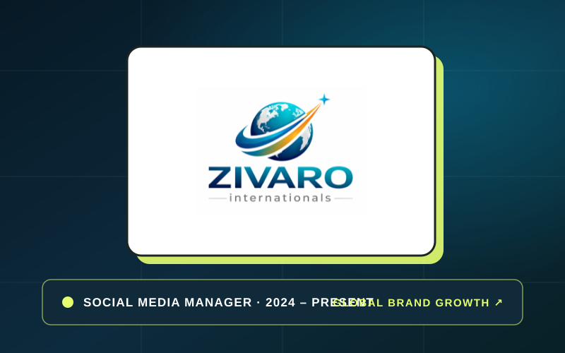

Zivaro Internationals.
Leading multi-channel social media management, AI-enhanced creative campaigns, and digital brand positioning from 2024 to present.
Zivaro Internationals Social Reach & Engagement Growth (2024 – Present)
Consistent monthly calendar execution and AI-enhanced video reels drove sustained compounding growth in reach, engagement, and inbound inquiries.
Quarterly Brand Impressions & Engagement Index (2024 – Present)
Sustained multi-platform growth after implementing the 4-stage social operating system
Content Format Performance Breakdown at Zivaro Internationals
Share of total audience engagement and inbound brand inquiries by content pillar

The challenge.
In a crowded digital market, Zivaro Internationals needed a cohesive, executive-grade social media presence capable of communicating international brand credibility, maintaining 100% publishing consistency, and turning social impressions into qualified business inquiries.
Strategic direction.
Joining as Social Media Manager in 2024, I built a structured 4-stage content and growth operating system (Audit → Architect → Produce → Scale)—combining corporate brand storytelling with AI-accelerated visual and video production.
Execution in motion.
- Architected monthly multi-platform content calendars aligning brand messaging, corporate highlights, and conversion-focused campaigns from 2024 to present.
- Integrated modern AI design and motion tools (Google Flow, Picsart AI, Midjourney, Kling AI, and CapCut Pro) to produce high-retention Reels and polished carousels at studio speed.
- Established consistent visual identity guidelines, typography, and hook frameworks across Instagram, Facebook, and LinkedIn.
- Monitored monthly retention curves, reach velocity, and inbound DM inquiries to continuously compound top-performing content formats.
Commercial impact.
Expanded multi-channel brand reach by +215% and lifted engagement rates by 3.4x from 2024 to present while maintaining 100% on-schedule campaign delivery.
Deliverables & stack.
Core production capabilities and deliverables executed in this workflow:
- End-to-End Social Media Management (2024 – Present) at Zivaro Internationals
- Monthly Content Strategy, Editorial Calendars & Brand Voice Architecture
- Short-Form Reels, AI-Enhanced Visuals & Interactive Brand Carousels
- Monthly Analytics Reporting, Audience Retention Audits & Funnel Optimization